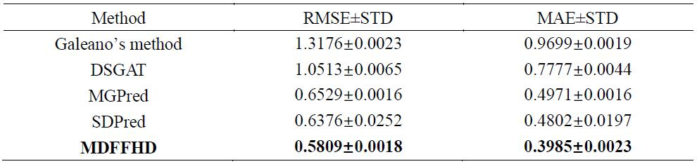
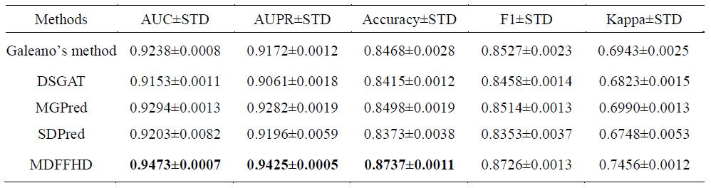
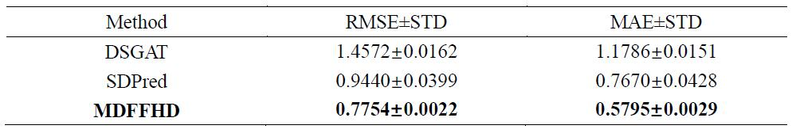
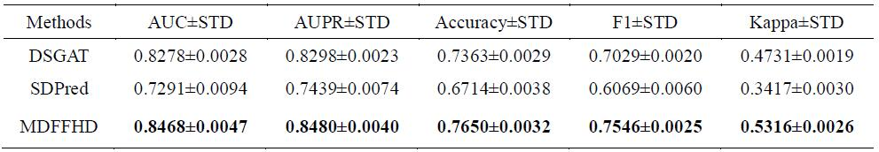
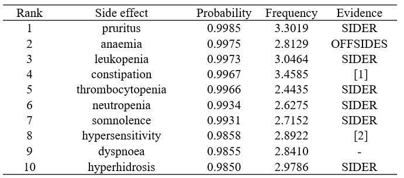
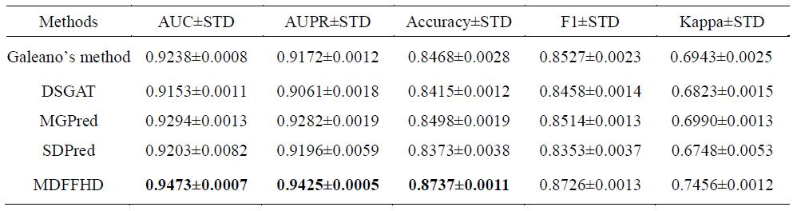
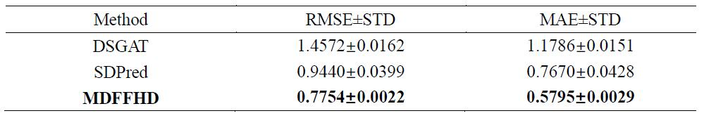
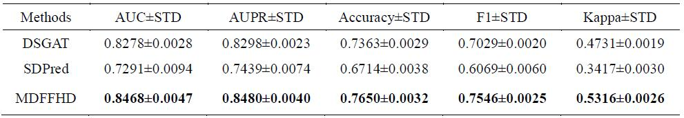
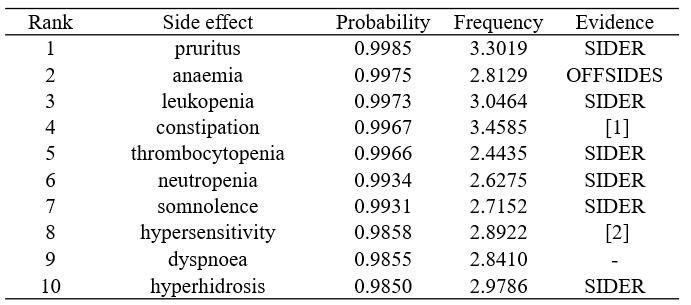

结果






表1. 频率预测十折交叉验证比较结果

表2. 关联预测十折交叉验证比较结果

表3. 模拟新药物频率预测十折交叉验证比较结果

表4. 模拟新药物关联预测十折交叉验证比较结果

表5. Fluconazole案例研究结果
[1] Rossi S, editor. Australian Medicines Handbook 2006. Adelaide: Australian Medicines Handbook; 2006.
[2] Craig, Timothy J.. "Adverse reactions to fluconazole: Illustrative case with focus on desensitization" Journal of Osteopathic Medicine, vol. 97, no. 10, 1997, pp. 584-584.
表6. Sertraline案例研究结果
[1] Fernandez, Antony, Suji E. Bang, and W. Victor R. Vieweg. "Cardiovascular side effects of newer antidepressants." Anatolian Journal of Cardiology/Anadolu Kardiyoloji Dergisi 7, no. 3 (2007).